Vista previa local. En WordPress el título lo pone el tema y las imágenes apuntan a https://santiagoways.com/wp-content/uploads/2026/11/.
Mapa del Camino de Santiago: todas las rutas, perfiles y tracks GPX
El mapa del Camino de Santiago reúne un conjunto de rutas históricas que atraviesan la península y Europa hasta la catedral de Santiago de Compostela. Aunque solemos hablar del Camino como si fuera una sola ruta, hay varios itinerarios, cada uno con su recorrido, su dificultad y su paisaje.
En esta guía tienes el mapa de las ocho rutas más recorridas, una por una, con su perfil de altitud y su track GPX para descargar. Los trazados son los de las rutas señalizadas y las cifras salen de medirlos sobre el terreno.
Mapa de las rutas del Camino de Santiago
Fíjate en cómo se juntan las rutas al acercarse a Santiago: el Primitivo se une al Francés en Melide y el del Norte, en Arzúa. Por eso los últimos días del Camino Francés son los más concurridos.
Las rutas del Camino de Santiago, comparadas
| Ruta | Inicio | Distancia | Desnivel positivo | Punto más alto | Dificultad |
|---|---|---|---|---|---|
| Camino Francés | Saint-Jean-Pied-de-Port | 766 km | +10 100 m | 1508 m | Media |
| Camino Portugués Central | Lisboa | 622 km | +6300 m | 476 m | Media-baja |
| Camino Portugués por la Costa | Oporto | 269 km | +2700 m | 257 m | Baja |
| Camino del Norte | Irún | 830 km | +13 900 m | 709 m | Alta |
| Camino Primitivo | Oviedo | 312 km | +6800 m | 1141 m | Alta |
| Camino Inglés | Ferrol | 112 km | +1700 m | 459 m | Media |
| Vía de la Plata y Camino Sanabrés | Sevilla | 974 km | +10 900 m | 1358 m | Alta |
| Camino de Finisterre y Muxía | Santiago | 90 km | +1500 m | 474 m | Media |
Las distancias están medidas sobre el trazado señalizado y los desniveles, sobre un modelo digital del terreno: tómalos como aproximados. Las guías oficiales pueden dar unos kilómetros de más o de menos según las variantes que cuenten.
Qué muestra el mapa del Camino de Santiago
El mapa general sirve para ver cómo se reparten las rutas jacobeas y dónde confluyen antes de llegar a Santiago. Existen muchas variantes históricas y ramales secundarios, pero en la práctica se habla de rutas cuando están señalizadas, tienen tradición jacobea reconocida y cuentan con servicios para peregrinos.
En los mapas de cada ruta, la línea verde es el itinerario y los puntos son las poblaciones y finales de etapa más habituales. En gris aparecen el resto de caminos, para que veas con cuáles se cruza. Debajo de cada mapa va su perfil de altitud: la forma más rápida de saber dónde están las subidas.
Mapa del Camino Francés
El Camino Francés es la ruta más conocida y transitada del Camino de Santiago, y la única declarada Patrimonio de la Humanidad por la Unesco como itinerario. Sale de Saint-Jean-Pied-de-Port, en Francia, cruza los Pirineos por Roncesvalles y atraviesa el norte peninsular hasta Santiago.
Recorrido del Camino Francés
Son unos 766 km desde Saint-Jean-Pied-de-Port. Pasa por Pamplona, Logroño, Burgos, León, Astorga, Ponferrada, O Cebreiro y Sarria, y en su tramo final se le unen otras rutas.
Su tramo más popular es el Camino Francés desde Sarria: son los últimos 115 km, algo más de la distancia mínima a pie para conseguir la Compostela.
Perfil del Camino Francés
No es la ruta más fácil ni la más exigente. Combina etapas de montaña, zonas onduladas y largos tramos de llanura en la meseta castellana. Las tres subidas que marcan el perfil son el paso de los Pirineos hasta Roncesvalles, la Cruz de Ferro, techo del Camino con 1508 m, y el ascenso a O Cebreiro, ya a las puertas de Galicia.
Mapa del Camino Portugués
El Camino Portugués es la segunda ruta más recorrida. Tiene dos grandes variantes, la Central y la de la Costa, que atraviesan Portugal de sur a norte, entran en Galicia y se juntan en Redondela. Son rutas amables en lo físico y con buenos servicios.
Camino Portugués Central
Sale tradicionalmente de Lisboa, aunque mucha gente empieza en Oporto o en Tui. Entra en España por el puente internacional entre Valença y Tui y sigue por O Porriño, Redondela, Pontevedra, Caldas de Reis y Padrón.
Desde Lisboa son unos 622 km. No tiene grandes puertos: el punto más alto apenas pasa de 476 m, en el tramo entre Santarém y Coimbra. Por eso es una de las rutas más recomendables para un primer Camino.
Camino Portugués por la Costa
Nace en Oporto y sube junto al Atlántico por Vila do Conde, Esposende y Viana do Castelo hasta cruzar el Miño entre Caminha y A Guarda. Sigue por la costa gallega, por Baiona y Vigo, y se une al trazado central en Redondela.
Son unos 269 km desde Oporto. Casi todo el recorrido va a baja altitud y el punto más alto es la propia llegada a Santiago. Es de las rutas más cómodas, y una buena opción para caminar en verano con la brisa del mar.
Mapa del Camino del Norte
El Camino del Norte, también llamado de la Costa, sale de Irún y recorre toda la cornisa cantábrica hasta Galicia. Es una de las rutas más espectaculares: mar, acantilados, pueblos marineros y etapas muy variadas. En Arzúa se une al Camino Francés.
Recorrido del Camino del Norte
Son unos 830 km por el País Vasco, Cantabria, Asturias y Galicia, pasando por San Sebastián, Bilbao, Santander, Gijón y Ribadeo. Está menos concurrido que el Francés y tiene mucha identidad local.
Perfil del Camino del Norte
Ningún puerto es muy alto, pero el perfil no da tregua: el sube y baja constante de la costa suma unos 13 900 m de desnivel positivo, el mayor de todas las rutas. A eso se añaden etapas largas y algo menos de infraestructura que en el Francés o el Portugués.
Mapa del Camino Primitivo
El Camino Primitivo sale de Oviedo y está considerado la ruta jacobea más antigua. Cruza el interior montañoso de Asturias y Galicia, pasa por Lugo y su muralla romana y se une al Camino Francés en Melide.
Recorrido del Camino Primitivo
Son unos 312 km por zonas rurales, de montaña y pueblos pequeños: un Camino más tranquilo y menos concurrido que los más populares.
Perfil del Camino Primitivo
Es la ruta más dura de las grandes, por cómo concentra el desnivel. El paso clave es el Puerto del Palo, a 1141 m, seguido del descenso al embalse de Salime y la subida a A Fonsagrada. Se recomienda a quien ya tiene experiencia o busca un Camino deportivo y de naturaleza.
Otras rutas del Camino de Santiago
Además de las rutas más populares, el mapa del Camino incluye otros itinerarios históricos que merecen atención.
La Vía de la Plata y el Camino Sanabrés
La Vía de la Plata es la ruta jacobea más larga: cruza la península de sur a norte desde Sevilla, por Mérida, Cáceres, Salamanca y Zamora. En Granja de Moreruela se separa el Camino Sanabrés, que entra en Galicia por Puebla de Sanabria y Ourense. En total, unos 974 km.
Es una ruta solitaria y de fondo. El punto más alto es el Alto de Padornelo, a 1358 m, ya en la sierra de Sanabria.
El Camino Inglés
Es la ruta más corta: unos 112 km desde Ferrol, por Pontedeume y Betanzos. Supera los 100 km que pide la Compostela y cabe en una semana, así que es buena opción si tienes pocos días.
El Camino de Finisterre y Muxía
Es el único que sale de Santiago en vez de llegar a ella. Va hacia la Costa da Morte por Negreira y Olveiroa: unos 90 km hasta el faro de Fisterra, con un ramal que se separa en Hospital hacia Muxía. Mucha gente lo hace después de llegar a Compostela, para terminar el Camino en el mar.
Qué ruta del Camino de Santiago elegir según tu perfil
Depende del tiempo que tengas, de tu forma física, de la época del año y del paisaje que prefieras. De forma general:
- Camino Francés: la opción más clásica y completa.
- Camino Francés desde Sarria: ideal para una primera vez y para conseguir la Compostela en pocos días.
- Camino Portugués Central: equilibrado, cómodo y con mucha tradición.
- Camino Portugués por la Costa: el más suave, siempre cerca del mar.
- Camino del Norte: paisajístico, exigente y menos concurrido.
- Camino Primitivo: el más duro y uno de los más auténticos.
- Camino Inglés: perfecto si tienes pocos días.
Descarga los tracks GPX del Camino de Santiago
Cada mapa lleva su track GPX. Sirve para llevar el trazado en el móvil o en el reloj, y para verlo sobre Google Maps: en Google My Maps, crea un mapa nuevo y usa «Importar» para cargar el archivo. También se abre en Wikiloc, Organic Maps o cualquier GPS de montaña.
- Track GPX del Camino Francés (766 km)
- Track GPX del Camino Portugués Central (622 km)
- Track GPX del Camino Portugués por la Costa (269 km)
- Track GPX del Camino del Norte (830 km)
- Track GPX del Camino Primitivo (312 km)
- Track GPX del Camino Inglés (112 km)
- Track GPX de la Vía de la Plata y Camino Sanabrés (974 km)
- Track GPX del Camino de Finisterre y Muxía (90 km)
Los tracks están simplificados para orientarse, no para seguirlos metro a metro. En el terreno manda siempre la señalización: las flechas amarillas y los mojones con la concha.
Consejos para usar un mapa del Camino de Santiago
Consultar el mapa antes de viajar ayuda a entender el recorrido, calcular etapas, comparar rutas y ver cómo se conectan los itinerarios. Además del mapa general, revisa siempre la información práctica de cada ruta: kilómetros, desnivel, servicios, alojamientos, clima y puntos de inicio habituales.
Si vas a caminar varios días, lleva el track GPX en el móvil y descarga los mapas para usarlos sin conexión: en algunas etapas de montaña la cobertura falla.
Preguntas frecuentes sobre el mapa del Camino de Santiago
¿Cuál es la ruta más corta del Camino de Santiago?
El Camino Inglés desde Ferrol, con unos 112 km. Le sigue el Camino Francés desde Sarria, con unos 115 km.
¿Desde dónde hay que empezar para conseguir la Compostela?
Hay que recorrer al menos los últimos 100 km a pie, o 200 km en bicicleta. Por eso los inicios más habituales son Sarria en el Camino Francés, Tui en el Portugués y Ferrol en el Inglés.
¿Cuál es la ruta más dura?
El Camino Primitivo, por la forma en que concentra las subidas. El del Norte suma más desnivel en total, pero lo reparte en muchos más kilómetros.
¿Puedo ver estos mapas en Google Maps?
Sí. Descarga el track GPX de la ruta e impórtalo en Google My Maps: verás el trazado sobre el mapa de Google y podrás consultarlo desde el móvil.
¿Te organizamos el Camino?
En Santiago Ways organizamos viajes autoguiados por todas estas rutas, con alojamientos seleccionados, traslado de equipaje y asistencia 24 horas, para que solo tengas que caminar a tu ritmo.
Solicitar presupuesto